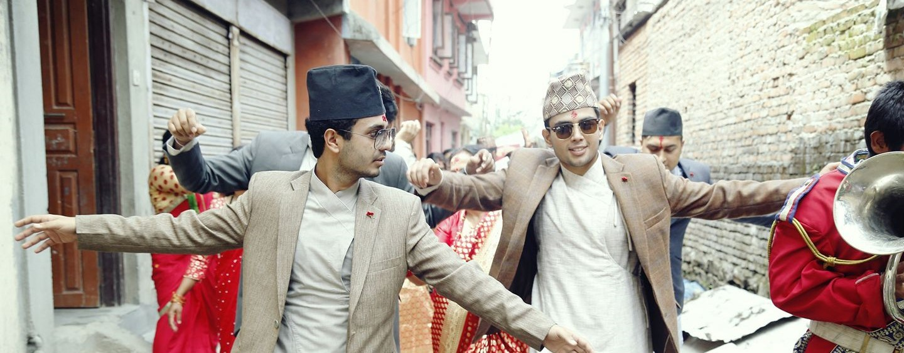

Welcome!
Welcome to my personal Website. Here you will learn a bit about myself, my hobbies, background, and goals in life. Its a mixture of a bio about my self and a resume in a more relaxed manner. I am 23 years old(on the date this is written). I was born in Kathmandu, Nepal(pictured above during my brother's wedding) and moved to the UK at the age of nine. I am an aspiring software engineer with a huge interest in writing and building software, netowrking, cybersecurity and much more in the industry. I am constantly seeking to expand my knowledge build on my skills. I made this webpage to build on my programming knowledge and also showcase myself to the world.
Work experiences and Achievements.
The first ever bit of work expeirence I remember doing was part of the "work experience" scheme during the end of my GCSE, run by Rosedale College. I worked at a printing and desinging shop. Seeing my age and the kind of experience, I was not doing much but it gave me an early insight on what the world of work looked like.
During my last year of A-levels, there was a massive earthquake that hit Nepal. I was able to organise and work on a charity gig with the aid of the Red Cross along with some friends to raise money for the earthquake that shook the entire nation.
During the first few months of my gap year(2015-2016), I got my first ever paid job at McDonalds. I worked the kitchen mostly and as a cashier. It not only gave me a bit more insight on the world of work but also helped me fund my own gap year trip.
Around the end of the year 2015, I travelled to nepal and alongside a friend found a volunteer work at a children's hospital in Kathmandu named "Kanti Children's Hospital". Our volunteer work included us shadowing doctors and nurses, working in teams to collect blood donations, working to get food and clothes donations to the hosptial. During my time here I saw many children and families with various challenges and difficulties in their life. From terminal cancer to third degree burns, it was an eye opener to work in such an environment. The resilience some of the kids and family showed and the hard work the docotrs and nurses put was inspiring.
I also worked at a supply chain company named "Motorsense Ltd" which my Dad managed. There I partook in various warehouse activities and some office work.
In the summer of 2016 and the end of my gap year, I went on a volunteering trip to china. Organised by a company named "gotoco" I was able to travel to Shantou in the Guangdong region of China. There I stayed for 2 months. During my stay, along side 9 other volunteers from the UK, I was working in an english teaching school named "BoB". Here I gave daily lessons in English to students from all age groups. This experience allowed me to indulge myself in a brand new cultre which I enjoyed every part of. It gave me an opportunity to expand my knowledge which I am very passionate about and work outside my comfort zone.
The most recent work expeirence I've had was working as an Operational Prison Officer at HMP/YOI Bronzefield. Working here enhanced many of my skills and taught me new ones. A high standard of skills on communication, teamwork, attention to detail, resilience and many more was always required for the work to operate smoothly. It not only boosted my confidence in working in the real world, but also was another eye openeing experience. Every day was a new experience whilst working at the prsion and I am grateful for the things I have learnt from this place. Working here for around a year, it gave me time to explore and really figure out what I wanted in life.
Education
Whilst living in Nepal, I attended a private school run by the british army and the gurkhas called "British Gorkha Academy." When I first moved to the uk at the age of 9, I attendted stonebridge primary school and quickly transfered to sudbury primary school. The first half of my secondery school was spent in Wembley High technlogy college and the rest in Rosedale College. During A-levels, I attended langley grammar school in Langley.
I recieved A*-C in 10 subjects for my GCSE's
I also completed Alevels for Maths, Biology and Chemistry
After completing my A-levels, i wasn't sure on where I wanted my career path to go. I took a gap year(more about that in the next section) and ended up choosing psychology to study at univercity. This wasn't my first choice but more a choice of uncertainty. I chose this subject as I felt pressured into getting into a univercity to further my education. I soon realised that psychology was not what I wanted so I dropped out to seek something else.
Future Updates